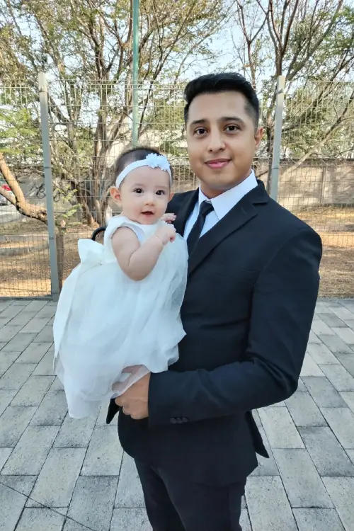

Welcome!
About Me
Hello! My name is Luis Antonio Olivares. I currently live in Guadalajara, Mexico, where I've been for the past six years. I'm originally from the United States and grew up in the beautiful states of Idaho and Washington.
Both Idaho and Washington are rich in natural beauty—forests, lakes, rivers, and mountains. Because of that, I've always been passionate about the outdoors. I enjoy fishing, hiking, floating down rivers, camping, and just about anything that connects me to nature.


Background
I originally come from a business background. However, after moving to Mexico, I found a new path—tutoring children from around the world. My students come from a wide range of cultural backgrounds, including:
- Japan
- Mexico
- South Korea
- Thailand
- China
- France
- Belgium
- Turkey
I learn just as much from them as they do from me, and that's what makes teaching such a rewarding experience!
Teaching Style
I believe that connection and fun are essential parts of the learning process—especially for young students. When students laugh and enjoy the lesson, they are more focused, more confident, and better able to retain what they learn.
My lessons are highly personalized. I adapt my teaching materials to match each student’s interests, creating a guided learning path that keeps them engaged and motivated. It’s always a joy to see students understand and respond to questions using proper grammar.
Once they build confidence in speaking, I increase the level of fluency to help develop their listening skills as well. Ultimately, my goal is to help every student express themselves clearly and confidently in English—because that’s the reason they chose to learn the language in the first place.
Start Learning With Me
Whether you're just beginning or want to improve your English fluency, I’ve created interactive materials designed to make learning fun, personalized, and effective. You’ll find vocabulary games, structured lessons, and tips that match your level and learning style.
Explore Learning Material